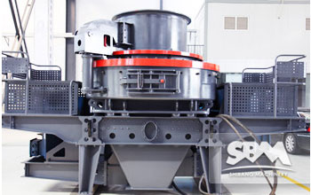
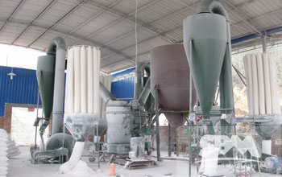
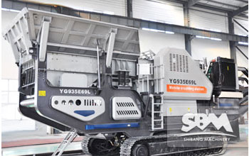
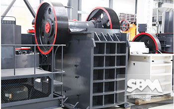

- 
Sand Making Machine
VSI sand making machine is designed to provide quality sand aggregate for highway, high-speed railway, high-rise buildings, municipal.
MORE INFO >Live Chat - 
Raymond Mill
Raymond mill has a very long history and is widely used in powder making industry. It can be used to grind various materials such as limestone.
MORE INFO >Live Chat -

Quarry Crusher
There are many quarry crushing machine supplier in the quarry crushing market.SBM is the world leader in rock and minerals processing.
MORE INFO >Live Chat -

Vertical Roller Mill
New type vertical roller mill is SBM to solve the industrial grinding mill low yield , energy consumption higher technical difficulties.
MORE INFO >Live Chat -
Portable Crusher
Portable crusher is SBM to meet all kinds of customers high quality, high yield and painstaking research and development needs a new equipment.
MORE INFO >Live Chat - 
Mobile Crusher
Mobile crusher station is my company to meet market demand, independent research and development of full hydraulic drive tracked vehicle screening equipment.
MORE INFO >Live Chat -

Stone Crusher
There are numerous stone mienrals resources all over the world. Stone crusher plant is operated in every corner stone and rock resources are found.
MORE INFO >Live Chat - 
Jaw Crusher
Jaw crusher is the emergence earlier crushing equipment, because of its simple structure, strong, reliable work, easy.
MORE INFO >Live Chat -

Impact Crusher
Impact crusher, which history can be traced back to nineteenth Century 50 years, distance from the birth of the first jaw crusher.
MORE INFO >Live Chat -

Cone Crusher
Cone crusher is suitable for crushing raw material, construction, road building, chemistry and silicate industry.
MORE INFO >Live Chat